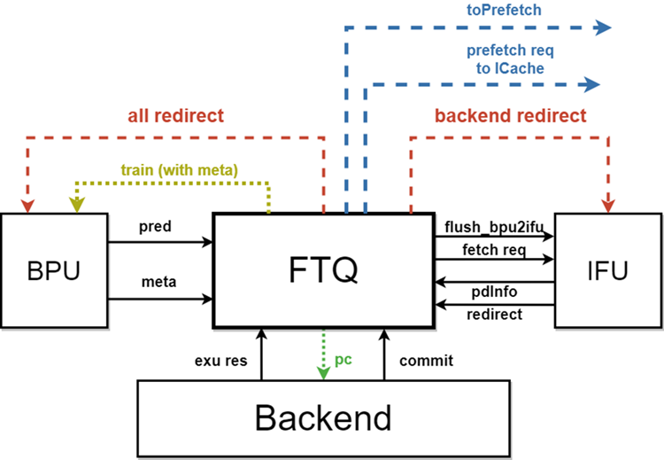
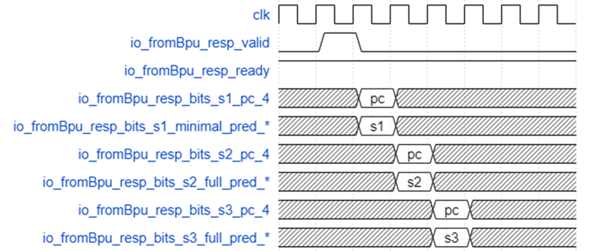

昆明湖 FTQ モジュール文書
用語説明
表 1.1 用語説明
| 略語 | 正式名称 | 説明 |
|---|---|---|
| CRU | Clock Reset Unit | クロックリセットユニット |
| FTQ | Fetch Target Queue | フェッチターゲットキュー |
| FTB | Fetch Target Buffer | フェッチターゲットバッファ |
機能説明
機能概要
FTQは分岐予測とフェッチユニット間のバッファキューであり、その主な役割はBPUが予測したフェッチターゲットを一時保存し、これらのフェッチターゲットに基づいてIFUにフェッチリクエストを送信することです。もう一つの重要な役割は、BPUの各予測器の予測情報を一時保存し、命令コミット後にこれらの情報をBPUに返送して予測器の訓練に使用することです。そのため、命令の予測からコミットまでの完全なライフサイクルを維持する必要があります。
- BPUが予測したフェッチターゲットの一時保存とIFUへのフェッチリクエスト送信をサポート
- BPUの予測情報の一時保存とBPUへの訓練用返送をサポート
- リダイレクト復旧をサポート
- ICacheへのプリフェッチリクエスト送信をサポート
BPUが予測したフェッチターゲットの一時保存とIFUへのフェッチリクエスト送信
BPUが予測したフェッチターゲットの一時保存
PCを格納する構造
BPUの1回の予測は3つのパイプラインステージを経て、各パイプラインステージで新しい予測内容が生成されます。FTQはBPUの各パイプラインステージからの予測結果を受け取り、後のパイプラインステージの結果が前のパイプラインステージの結果を上書きします。
命令は予測ブロック単位でBPUから発行され、FTQに入り、同時にbpuPtrポインタが1増加し、対応するFTQエントリの各種状態を初期化し、各種予測情報を格納構造に書き込みます。予測ブロックがBPUの上書き予測ロジックからの場合、bpuPtrとifuPtrを復元します。
BPUが予測したフェッチターゲットはFTQのftq_pc_memに一時保存されます：
- ftq_pc_mem：レジスタファイル実装で、命令アドレスに関連する情報を格納します。以下のフィールドを含みます：
- startAddr 予測ブロックの開始アドレス
- nextLineAddr 予測ブロックの次のキャッシュラインの開始アドレス
- isNextMask 予測ブロック内の各命令の開始位置が予測幅でアラインされた次の領域にあるかどうか。isNextMaskは16ビットで、各ビットは開始アドレスからの相対的な2byte*n位置がキャッシュラインをまたぐかどうかを表し、各位置の性質を示します
- fallThruError 予測された次の順次フェッチアドレスにエラーがあるかどうか
各フィールドはそれぞれ独自のレジスタ（例：data_0_startAddr）に格納され、連結して同じRegに格納されることはありません。
PCの計算方法
ICacheからのフェッチごとに、1つまたは2つのCacheLineSize（64バイト）長のキャッシュライン命令データを取得します。2つ取得するかどうかは、予測ブロックがキャッシュラインをまたぐかどうかによって決まります。
各予測ブロックの長さはPredictWidth（16）個の圧縮命令の長さ（32バイト）です。各キャッシュラインの長さは各予測ブロック長の2倍なので、各予測ブロックのstartAddrは現在のキャッシュラインの前半（startAddr[5]=0）または後半（startAddr[5]=1）のいずれかになります。
startAddr[5]=0の場合、現在の予測ブロックは必ずキャッシュラインをまたがないため、この時の予測命令pcは{startAddr[38,6],startAddr[5,1]+offset,1'b0}となります。
startAddr[5]=1の場合、現在の予測ブロックはキャッシュラインをまたぐ可能性があります。この時：
- isNextMask(offset)=0の場合、現在の予測命令pcはキャッシュラインをまたがないため、この時の予測命令pcは{startAddr[38,6],startAddr[5,1]+offset,1'b0}となります
- isNextMask(offset)=1の場合、現在の予測命令pcはキャッシュラインをまたいでいるため、この時の予測命令pcは{nextLineAddr[38,6],startAddr[5,1]+offset,1'b0}となります
IFUへのフェッチリクエスト送信
FTQはIFUにフェッチリクエストを発行し、ifuPtrポインタが1増加し、事前デコード情報のライトバックを待ちます。
IFUがライトバックした事前デコード情報はFTQのftq_pd_memに一時保存されます：
- ftq_pd_mem：レジスタファイル実装で、フェッチユニットが返した予測ブロック内の各命令のデコード情報を格納します。以下のフィールドを含みます：
- brMask 各命令が条件分岐命令かどうか
- jmpInfo 予測ブロック末尾の無条件ジャンプ命令の情報（存在するか、jalかjalrか、callまたはret命令か）
- jmpOffset 予測ブロック末尾の無条件ジャンプ命令の位置
- jalTarget 予測ブロック末尾のjalのジャンプアドレス
- rvcMask 各命令が圧縮命令かどうか
BPUの予測情報の一時保存とBPUへの訓練用返送
BPUの予測情報の一時保存
BPUからFTQに渡される予測情報は、上述のftq_pc_memに保存される以外に、一部の情報がftq_redirect_sram、ftq_meta_1r_sram、ftb_entry_memに格納されます。
- ftq_redirect_sram：SRAM実装で、リダイレクト時に復元する必要がある予測情報を格納します。主にRASと分岐履歴に関連する情報を含みます。3つのbankに分割され、各bankの深さ×幅は64×236です
- ftq_meta_1r_sram：SRAM実装で、その他のBPU予測情報を格納します。SRAMの深さ×幅は64×256です
- ftb_entry_mem：レジスタファイル実装で、予測時のFTBエントリの必要な情報を格納し、コミット後に新しいFTBエントリを訓練するために使用します。なぜftb_entryを保存するのでしょうか？更新時にftb_entryは元の基礎の上で修正を続ける必要があり、ftbを再度読み込まないために、ここでftb_entryをftb_entry_memに格納します
FTQ内の各sram/memの具体的な実装メカニズムは以下の表の通りです：
| 書き込みタイミング（順方向書き込み） | 更新タイミング（逆方向更新、リダイレクトなど） | 読み出しタイミング | 書き込みデータ内容 | 更新データ内容 | |
|---|---|---|---|---|---|
| ftq_pc_mem | BPUパイプラインのS1ステージ、新しい予測エントリ作成時に書き込み | 存在しない（現在の設計では、FTQがリダイレクトをBPUとIFUに送信し、BPUが新しいアドレスへのリダイレクトの予測ブロックを再度キューに入れる時にftq_pc_memに新しいブロックを書き込む。ftq_pc_memのエントリは現在の予測ブロックのアドレスを表し、targetを含まないため、予測が間違ったブロックを更新する必要はない） | データは毎クロックサイクルでRegに格納される。IFUがbypassからデータを読み取る必要がない場合、RegデータはIcacheとIFUに直接接続される | startAddr：予測ブロックの開始アドレス nextLineAddr：予測ブロックの次のキャッシュラインの開始アドレス isNextMask：予測ブロック内の各命令の開始位置が予測幅でアラインされた次の領域にあるかどうか（① isNextMask(offset) = 0の場合、現在の予測命令pcはキャッシュラインをまたがず、予測命令pc = {startAddr[38, 6], startAddr[5, 1] + offset, 1'b0}。② isNextMask(offset) = 1の場合、現在の予測命令pcはキャッシュラインをまたぎ、予測命令pc = {nextLineAddr[38,6], startAddr[5, 1] + offset, 1'b0}。）fallThruError：予測された次の順次フェッチアドレスにエラーがあるかどうか | なし |
| ftq_meta_1r_sram | BPUパイプラインのS3ステージ | FTQエントリ内の命令がコミット可能になった時、metaデータを読み出してBPUの訓練に送信 | 書き込みデータには4つの予測器の予測情報が含まれる | ||
| ftb_entry_mem | BPUパイプラインのS3ステージ | 1.バックエンドリダイレクト 2.IFUが事前デコード情報をライトバック 3.IFUの事前デコードがエラーを検出してリダイレクト送信 | BrSlot: brSlot_offset/lower/tarStat/sharing/validTailSlot: tailSlot_offset/lower/tarStat/sharing/validpftAddr,carry,isCall,isRet,isJalr…… | ||
| ftq_pd_mem | IFUステージF3パイプラインの次のサイクル | 常にcommPtrをアドレスとして対応するデータを読み取り、ftbEntryGenに割り当てる | rvcMaskbrMaskjmpInfojmpOffsetjalTarget |
BPUへの訓練用返送
命令がバックエンドでコミットされると、FTQにこの命令がコミットされたことが通知されます。FTQエントリ内のすべての有効な命令がバックエンドでコミットされると、commPtrポインタが1増加し、格納構造から対応する情報を読み出してBPUに送信し訓練を行います。
昆明湖V2バージョンでは、commitStateQueueを使用してFTQエントリ内の命令コミット状態を記録します。なお、この設計は完全ではなく、BPUの更新意図に反するため、V3ではバックエンドと連携してこのメカニズム全体を削除しました。
commitStateQueueの各ビットは、FTQエントリ内の命令がコミットされたかどうかを記録します。
V2のバックエンドはROB内でFTQエントリを再圧縮するため、エントリ内のすべての命令がコミットされることを保証できず、各エントリに命令がコミットされることすら保証できません。エントリがコミットされたかどうかの判断には以下の可能性があります：
robCommPtrがcommPtrより前にある。つまり、バックエンドは既に後のエントリの命令のコミットを開始しており、robCommPtrが指すエントリより前のエントリは全てコミット完了しているcommitStateQueue内の最後の命令がコミットされた。エントリの最後の命令がコミットされたということは、このエントリが全てコミットされたことを意味する
これ以外に、バックエンドにはflush itself のredirectリクエストが存在することを考慮する必要があります。これは、この命令自体も再実行する必要があることを意味し、例外、load replayなどの状況が含まれます。この状況では、このエントリはBPUを更新するためにコミットされるべきではありません。そうしないとBPUの精度が著しく低下します。
リダイレクト復旧
各予測後、RASのスタックトップエントリとスタックポインタはFTQのftq_redirect_sramに格納され、同時に使用されたBPUグローバル履歴がFTQに格納され、誤予測復旧に使用されます。
事前デコードによる予測エラー検出
FTQがIFUにフェッチリクエストを発行した後、IFUはFTQに事前デコード情報をライトバックし、ifuWbPtrポインタが1増加します。事前デコードが予測エラーを検出した場合、BPUに対応するリダイレクトリクエストを送信します。FTQはリダイレクト信号内のftqIdxに基づいてbpuPtrとifuPtrを復元します。
バックエンドによる誤予測検出
命令がバックエンドで実行時に誤予測を検出した場合、FTQに通知し、FTQはIFUとBPUに対応するリダイレクトリクエストを送信し、同時にFTQはリダイレクト信号内のftqIdxに基づいてbpuPtr、ifuPtr、ifuWbPtrを復元します。
ftqに格納されたリダイレクトデータを1サイクル早く読み出してredirectの損失を削減するため、バックエンドはftqに対して（正式なバックエンドredirect信号に対して）1サイクル早くftqIdxAhead信号とftqIdxSelOH信号を送信します。しかし1サイクル早くするとバックエンドは正確なftqIdxをタイムリーに取得できず、4つのAlu経路で調停する必要がありますが、調停結果は正式なバックエンドredirect信号が有効になった時にのみ得られるため、FTQが取得する1サイクル早いredirectのftqIdx信号は4つの経路すべてを読み取る必要があります。
- io.fromBackend.ftqIdxAhead：7つのFtqIdx。リダイレクトが必要な予測ブロックのftq内の格納インデックスを表します。7つあるのは、バックエンドの最終調停前にredirect信号を生成する可能性のある経路が7つあるためで、それぞれJump1、Alu4、LdReplay1、Exception1ですが、そのうちAlu*4が生成するredirect信号のみを事前に読み取るため、ftqIdxAheadで実際に使用されるのは4つのFtqIdxのみです
- Io.fromBackend.ftqIdxSelOH：4ビットのワンホットコード+valid、4つの経路のftqIdxAheadの有効性を表し、ハイアクティブ
ICacheへのプリフェッチリクエスト送信
BPUは基本的にブロックがないため、IFUより先に進むことがよくあります。そのため、FTQではBPUが提供したまだIFUに送信されていないフェッチリクエストを命令プリフェッチとして使用し、命令キャッシュに直接プリフェッチリクエストを送信します。
全体ブロック図

インターフェースタイミング
- BPUからFTQへのインターフェースタイミング

上図はBPUからFTQへの予測結果インターフェースタイミングを示しています。対応するハンドシェイク信号io_fromBpu_resp_validとio_fromBpu_resp_readyが同時にハイの時、BPUの3つのパイプラインステージの予測結果がパイプライン内の1、2、3ステージでそれぞれFTQに入力されます。
BPUの後のパイプラインステージの予測結果が前のパイプラインステージと一致しない場合、対応するredirect信号io_fromBpu_resp_bits_s2_hasRedirect_4またはio_fromBpu_resp_bits_s3_hasRedirect_4がハイになり、予測パイプラインをフラッシュする必要があることを示します。
役割説明
FTQは分岐予測とフェッチユニット間のバッファキューであり、その主な役割はBPUが予測したフェッチターゲットを一時保存し、これらのフェッチターゲットに基づいてIFUにフェッチリクエストを送信することです。もう一つの重要な役割は、BPUの各予測器の予測情報を一時保存し、命令コミット後にこれらの情報をBPUに返送して予測器の訓練に使用することです。そのため、命令の予測からコミットまでの完全なライフサイクルを維持する必要があります。バックエンドでPCを格納するコストが大きいため、バックエンドが命令PCを必要とする時はFTQから読み取ります。
内部構造
FTQは合計64エントリで、キュー構造ですが、キュー内の各エントリの内容はその特性に応じて異なる格納構造に格納されます。これらの格納構造には主に以下が含まれます：
- ftq_pc_mem: レジスタファイル実装で、命令アドレスに関連する情報を格納します。以下のフィールドを含みます
- startAddr 予測ブロックの開始アドレス
- nextLineAddr 予測ブロックの次のキャッシュラインの開始アドレス
- isNextMask 予測ブロック内の各命令の開始位置が予測幅でアラインされた次の領域にあるかどうか
- fallThruError 予測された次の順次フェッチアドレスにエラーがあるかどうか
- ftq_pd_mem: レジスタファイル実装で、フェッチユニットが返した予測ブロック内の各命令のデコード情報を格納します。以下のフィールドを含みます
- brMask 各命令が条件分岐命令かどうか
- jmpInfo 予測ブロック末尾の無条件ジャンプ命令の情報（存在するか、jalかjalrか、callまたはret命令か）
- jmpOffset 予測ブロック末尾の無条件ジャンプ命令の位置
- jalTarget 予測ブロック末尾のjalのジャンプアドレス
- rvcMask 各命令が圧縮命令かどうか
- ftq_redirect_sram: SRAM実装で、リダイレクト時に復元する必要がある予測情報を格納します。主にRASと分岐履歴に関連する情報を含みます
- ftq_meta_1r_sram: SRAM実装で、その他のBPU予測情報を格納します
- ftb_entry_mem: レジスタファイル実装で、予測時のFTBエントリの必要な情報を格納し、コミット後に新しいFTBエントリを訓練するために使用します
さらに、キューポインタやキュー内の各エントリの状態などの情報はレジスタで実装されます。
FTQ内の命令のライフサイクル
命令は予測ブロック単位でBPUから予測された後FTQに送られ、命令が含まれる予測ブロック内のすべての命令がバックエンドで完全にコミットされるまで、FTQは格納構造内でその予測ブロックに対応するエントリを完全に解放しません。このプロセスで発生する事象は以下の通りです：
- 予測ブロックがBPUから発行されてFTQに入り、bpuPtrポインタが1増加し、対応するFTQエントリの各種状態を初期化し、各種予測情報を格納構造に書き込みます。予測ブロックがBPUの上書き予測ロジックからの場合、bpuPtrとifuPtrを復元します
- FTQがIFUにフェッチリクエストを発行し、ifuPtrポインタが1増加し、事前デコード情報のライトバックを待ちます
- IFUが事前デコード情報をライトバックし、ifuWbPtrポインタが1増加します。事前デコードが予測エラーを検出した場合、BPUに対応するリダイレクトリクエストを送信し、bpuPtrとifuPtrを復元します
- 命令がバックエンドで実行され、バックエンドが誤予測を検出した場合、FTQに通知し、IFUとBPUにリダイレクトリクエストを送信し、bpuPtr、ifuPtr、ifuWbPtrを復元します
- 命令がバックエンドでコミットされ、FTQに通知します。FTQエントリ内のすべての有効な命令がコミットされると、commPtrポインタが1増加し、格納構造から対応する情報を読み出してBPUに送信し訓練を行います
予測ブロックn内の命令のライフサイクルは、FTQ内のbpuPtr、ifuPtr、ifuWbPtr、commPtrの4つのポインタに関連します。bpuPtrがn+1を指し始めると、予測ブロック内の命令がライフサイクルに入り、commPtrがn+1を指した後、予測ブロック内の命令がライフサイクルを完了します。
FTQのその他の機能
BPUは基本的にブロックがないため、IFUより先に進むことがよくあります。そのため、BPUが提供したまだIFUに送信されていないフェッチリクエストを命令プリフェッチとして使用でき、FTQではこの部分のロジックを実装し、命令キャッシュに直接プリフェッチリクエストを送信します。